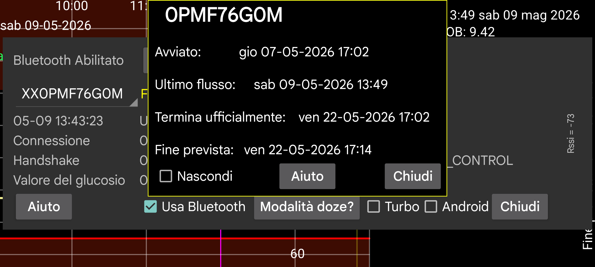

ar de es hi it ja ko nl ru uk uz en
Mostra l'avvio, l'ultimo flusso, l'ultima scansione e gli orari di fine prevista e ufficiale del sensore.
Riscaldamento: Per i sensori Sibionics e Linx/Lumiflex/Aidex X puoi cambiare il numero di minuti del periodo di riscaldamento. Tutte le funzioni ignoreranno i dati durante il periodo di riscaldamento: curva sullo schermo, statistiche, dati esportati e dati visibili nel webserver. Anche retroattivamente.
Nascondi: Selezionando si nasconde la curva. Oltre a deselezionare, puoi anche rendere nuovamente visibile la curva premendo "Mostra" in basso a destra dello schermo.
Calibrazioni: Se hai specificato l'etichetta della glicemia in menu sinistro→Impostazione→Calibrazione e inserito misure di glicemia con menu centrale sinistro→Nuovo valore, che non sono state escluse, puoi premere il pulsante "Calibrazioni" per ottenere un elenco delle calibrazioni effettuate. Vedi: https://www.juggluco.nl/Juggluco/index.html#calibration
Attiva: Per i sensori terminati viene mostrato il pulsante "Attiva". Premendo questo pulsante puoi usare nuovamente il sensore senza scansionare la data matrix sulla confezione. Puoi usarlo anche per i sensori Libre 2 e 3, ma se hai scansionato il sensore con Juggluco su un altro telefono, devi sempre scansionare nuovamente il sensore tramite NFC per recuperarlo.